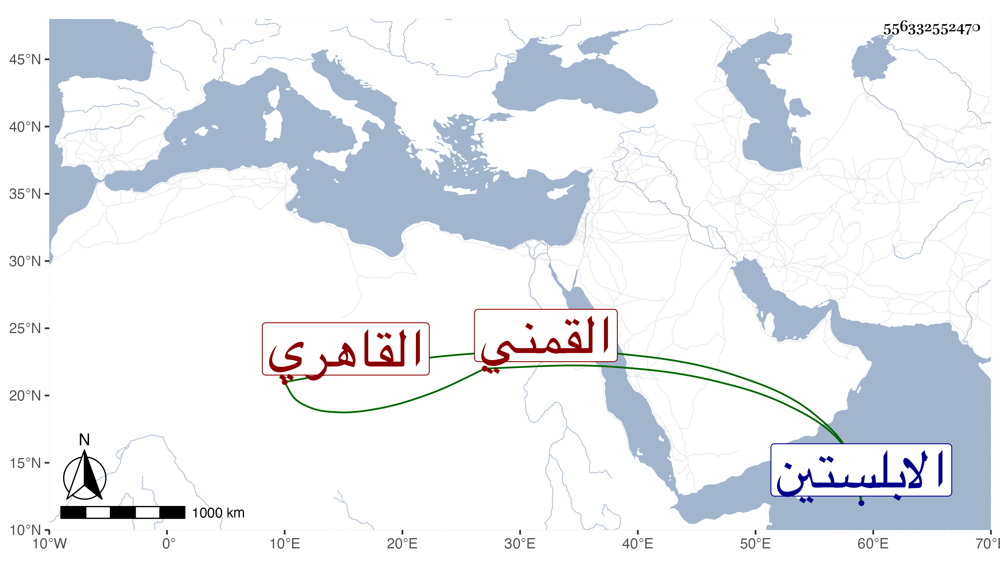

0902Sakhawi.DawLamic.ITO20230111-ara1.EIS1600.556332552470
Biography ID: 556332552470
174
محمد بن محمد بن أبي بكر بن مباركشاه أبو النجا بن التاج القمني الاصل القاهري . ولد بالظاهرية القديمة في العشرين من ربيع الأول سنة أربع وثلاثين وثمانمائة وحفظ القرآن والربع من المنهاج وسمع الحديث بالظاهرية وغيرها ، وتدرب في صناعة القبان وزنا بشعبان وتكسب به دهره وسافر بسببه لجهات ، ودخل الابلستين فما دونها وحضر وقعتي سوار . ومن نظمه وقد عرض له ريح :
| يا رب إن الريح أضعف بنيتي | فأضرها وأضر بي تبريحي |
| فاكشف بفضلك كربه عني ولا | تجعل دعائي رائحا في الريح |
ومنه :
| قال حبيبي حين قبلته | ونلت منه رتبة عليا |
| تعشقني قم فاسقني خمرة | ولات بالف لام يا |
ومنه :
| شاهدت في وجهه حبي | غرائبا وفنونا |
| عيناه مع حاجبيه | صادا وواوا ونونا |
وهو القائل :
| تفتى بعود كنيس | لمن طغى وتولى |
| وتدعي نقل علم | والله ما أنت إلا |
وله في التصحيف عمل وكذا في الموسيقى والنغما والنقرا علما وعملا كاد أن يجمع عليه في ذلك وله تقدم في العوم بل هو بهلوان ونحو ذلك ، لقيني في أول سنة ست وتسعين فسمع مني المسلسل .
